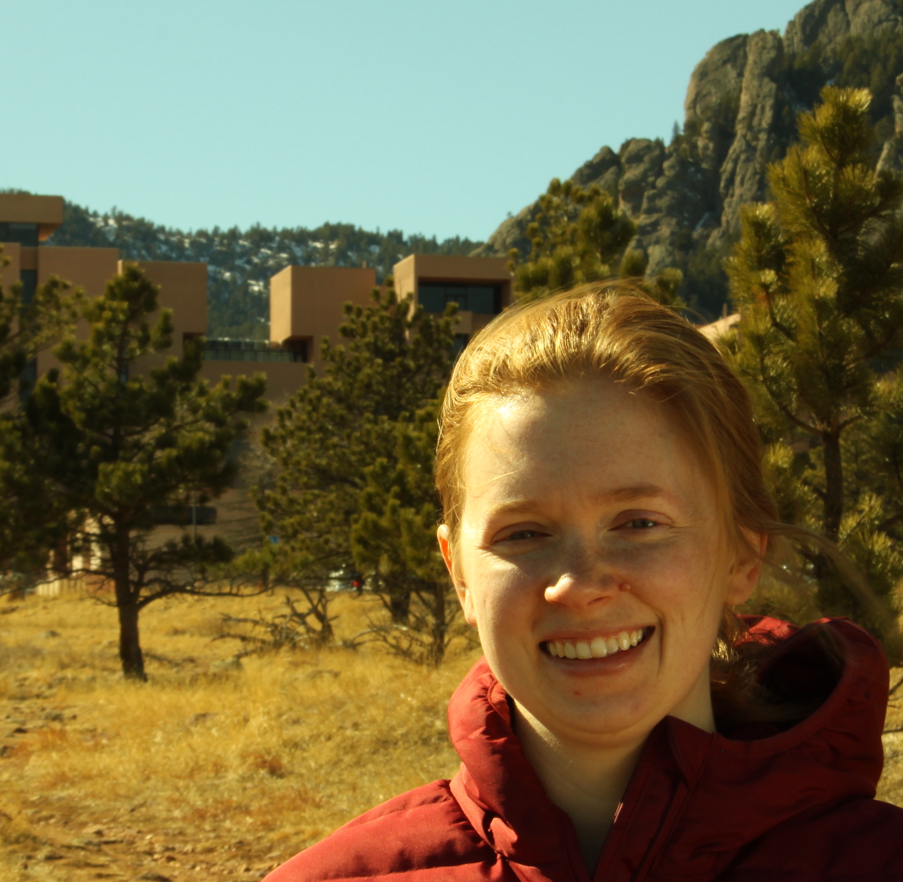

|  | Welcome! I am currently an Advanced Study Program postdoctoral fellow in the Climate & Global Dynamics Laboratory at the National Center for Atmospheric Research. I completed my Ph.D. in Earth and Planetary Sciences at Harvard University in 2017, under the advisement of Dan Schrag. Contact Information: Katie Dagon National Center for Atmospheric Research Climate & Global Dynamics Laboratory P.O. Box 3000 Boulder, CO 80307 kdagon [at] ucar [dot] edu Google Scholar ResearchGate |